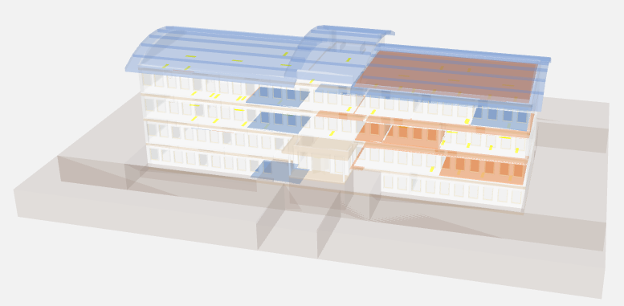
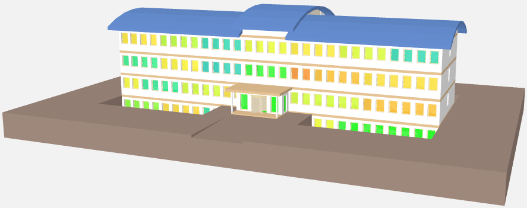
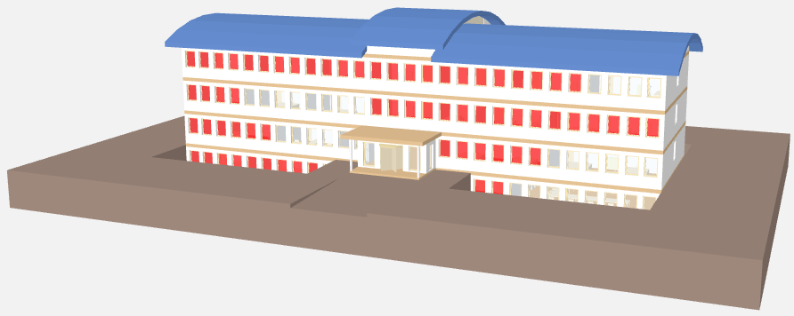
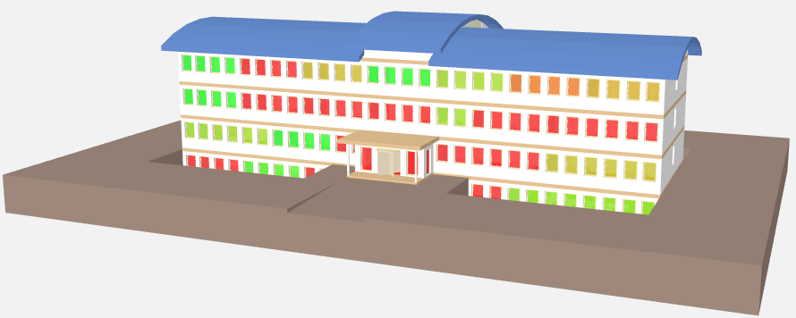
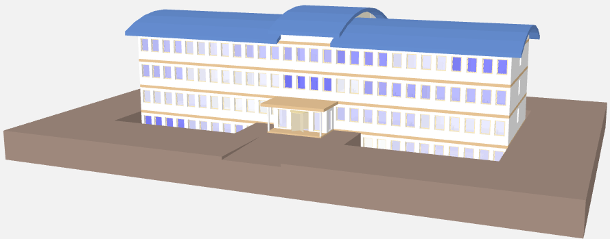
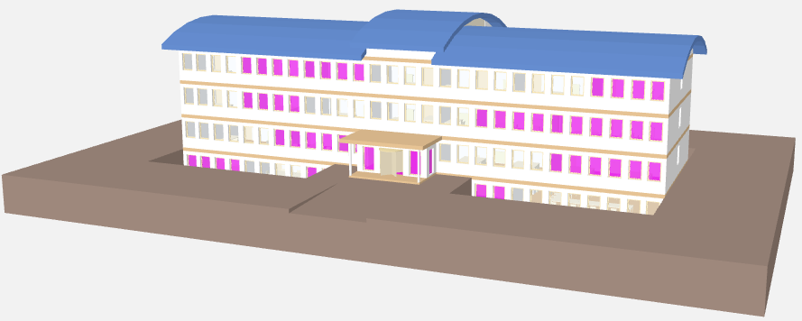
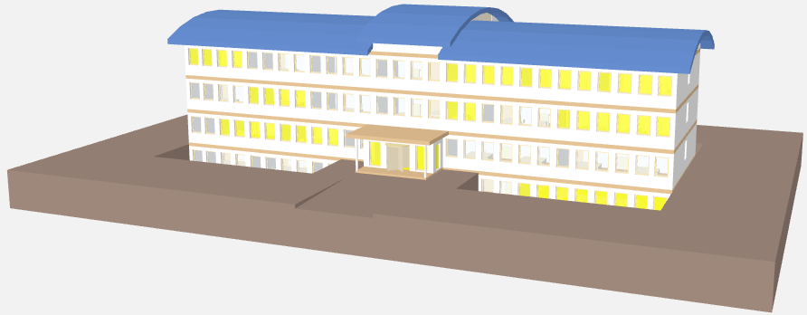
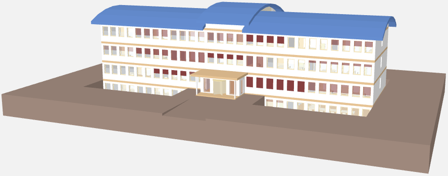

Display Building Information
Prerequisites:
- System Manager is in Operation mode.
- In System Browser, Logical View is selected. BIM graphics can also be selected in the Application View as an alternative.
Building Overview Alarms
- Select Logical > [Subsystem name] > [Building name].
- The BIM Viewer tab opens.
- Click Show room alarms
 .
. - Click X-ray view .
- X-ray view also displays alarm inside the rooms.
- Click Show related alarms in EventList
 .
. - The event list displays.
- Acknowledge and reset alarm.
- Click Close event list
 .
.
- Alarms are displayed in the corresponding color for the alarm category color in the building overview graphic.

Building Overview: Temperature
- Select Logical > [Subsystem name] > [Building name].
- The BIM Viewer tab opens.
- Click Show room temperature .

Building Overview: Open Windows
- Select Logical > [Subsystem name] > [Building name].
- The BIM Viewer tab opens.
- Click Show window states .

Building Overview: Room Air Quality
- Select Logical > [Subsystem name] > [Building name].
- The BIM Viewer tab opens.
- Click Show room air quality .

Building Overview: Room humidity
- Select Logical > [Subsystem name] > [Building name].
- The BIM Viewer tab opens.
- Click Show room humidity .

Building Overview: Room Occupancy
- Select Logical > [Subsystem name] > [Building name].
- The BIM Viewer tab opens.
- Click Show room occupancy .

Building Overview: Lighting
- Select Logical > [Subsystem name] > [Building name].
- The BIM Viewer tab opens.
- Click Show room lighting state .

Building Overview: Blinds
- Select Logical > [Subsystem name] > [Building name].
- The BIM Viewer tab opens.
- Click Show blinds state .
